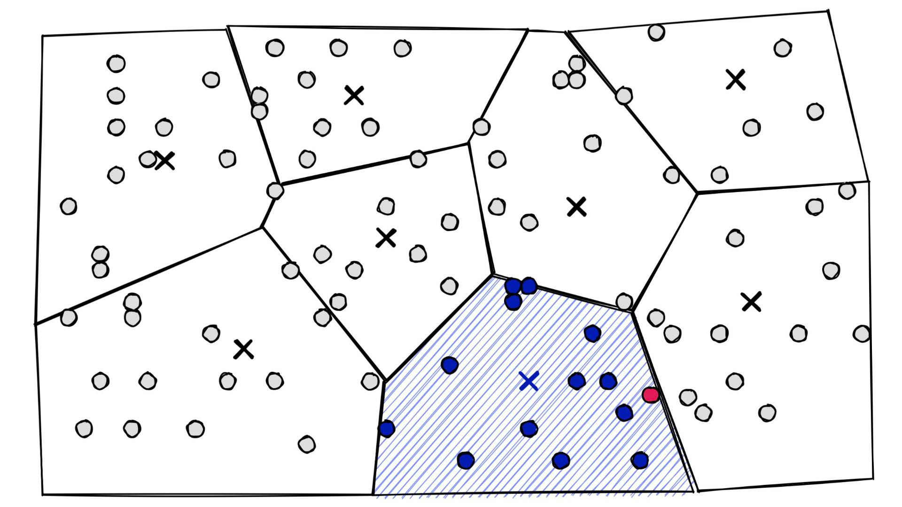

ANN methods: define the target before choosing the index
An approximate nearest-neighbor (ANN) index can execute in sub-millisecond latency and still solve the wrong retrieval task. Before choosing between proximity graphs, Voronoi partitions, trees, or vector quantizers, a retrieval system must specify three invariants: which vectors are eligible, how similarity or distance is scored, and how many neighbors $K$ are required. Those choices define the exact ground-truth answer that every approximate index will be evaluated against.
In dense retrieval and Retrieval-Augmented Generation (RAG), ANN algorithms trade a controlled amount of neighbor-overlap recall for orders-of-magnitude reductions in distance evaluations or memory footprint. Classical randomized schemes such as Locality-Sensitive Hashing (LSH) provide formal worst-case collision guarantees under specific geometric assumptions, whereas modern production workhorses such as HNSW and IVF-PQ rely on data-adaptive partitions, navigable graphs, and learned codebooks whose recall-latency operating points must be measured empirically on your workload.
Name the exact target
Let $q\in\mathbb{R}^d$ be a query vector, $\{x_1,\dots,x_N\}\subset\mathbb{R}^d$ be the indexed corpus vectors, and $E(q)\subseteq\{1,\dots,N\}$ be the subset of document IDs eligible for the request (for example, matching a tenant ID, access-control policy, date window, or document status). For a distance function $d(q,x_i)$ where smaller values indicate closer neighbors, the exact target set is:
Writing $-d(q,x_i)$ inside $\operatorname{topk}$ standardizes the objective so that selecting the top-$K$ items always means selecting the $K$ best scores (equivalently, the $K$ smallest distances). Any metadata or authorization predicate encoded in $E(q)$ belongs to the problem definition itself: both the exact baseline and the approximate index must be evaluated against the exact same eligible subset $E(q)$.
Edge cases require explicit conventions before benchmarking:
- Underfilled eligible sets ($0 < |E(q)| < K$): The exact target $T_k(q)$ contains only $|E(q)|$ items. Overlap recall must normalize by $|T_k(q)| = |E(q)|$, not $K$, while result-fill rate is tracked separately.
- Empty eligible sets ($E(q) = \varnothing$): A valid retriever returns zero results. Because the recall denominator $|T_k(q)|$ is zero, empty-reference queries must be counted in a separate bucket rather than fabricated as $0.0$ or $1.0$ recall.
- Distance ties and duplicate IDs: Equal distances require a deterministic tie-breaker (such as ascending integer ID), and duplicate IDs in a response must never be double-counted toward overlap recall.
Exhaustive exact search (IndexFlatL2 or IndexFlatIP in Faiss) computes all $|E(q)|$ distances in $O(Nd)$ coordinate operations and maintains a capacity-$K$ bounding heap in $O(N\log K)$ time. When $N$ (or $|E(q)|$ after pre-filtering) is only a few thousand vectors, or when queries arrive in batches that saturate SIMD/GPU matrix-multiplication kernels, an exact flat scan is often faster, simpler, and smaller than a graph or tree index. Always include an exact flat baseline in your benchmark before assuming an approximate structure wins.
A metric choice can change the winner
Three scoring functions dominate vector retrieval: Inner Product (IP), Cosine Similarity, and Squared Euclidean ($L_2^2$) Distance. When vectors are unnormalized, these three metrics optimize different geometric quantities and can rank the exact same corpus in completely different orders.
Consider the fixed 2D query $q=(1,0)$ and four candidate vectors $A, B, C, D$. Inner product and cosine similarity are maximized, whereas squared $L_2$ distance is minimized:
The query is fixed at q = (1, 0). Scores are rounded only for display.
| ID and vector | Inner product | Cosine | Squared L2 |
|---|---|---|---|
| A = (1, 0) | 1 | 1 | 0 |
| B = (2, 2) | 2 | 0.7071 | 5 |
| C = (0, 3) | 0 | 0 | 10 |
| D = (-1, 0) | -1 | -1 | 4 |
Scroll horizontally to compare the columns. Keyboard: focus the table, then use the left and right arrow keys.
Inspect how the winner and runner-up shift across the columns:
- Raw Inner Product ($q^\top x$) picks $B=(2,2)$ first: Even though $B$ points at a $45^\circ$ angle to $q$, its large Euclidean norm ($\lVert B\rVert_2 = \sqrt{8} \approx 2.83$) scales its projection onto $q$ to $2$, beating $A=(1,0)$ which is perfectly aligned with $q$ but has unit norm.
- Cosine Similarity picks $A=(1,0)$ first and $B=(2,2)$ second: Dividing by $\lVert q\rVert_2 \lVert x\rVert_2$ removes magnitude and ranks purely by angle ($\theta_A = 0^\circ$, $\theta_B = 45^\circ$, $\theta_C = 90^\circ$, $\theta_D = 180^\circ$).
- Squared $L_2$ picks $A=(1,0)$ first, but picks $D=(-1,0)$ second instead of $B=(2,2)$: Moving two units in the opposite direction to $D$ yields squared distance $2^2 + 0^2 = 4$, which is smaller than moving one unit right and two units up to $B$ ($1^2 + 2^2 = 5$).
When both the query and every stored vector are $L_2$-normalized to unit length ($\lVert q\rVert_2 = \lVert x\rVert_2 = 1$), the three objectives collapse into a strictly monotonic transformation of one another:
Under unit normalization, maximizing inner product, maximizing cosine similarity, and minimizing squared $L_2$ distance produce the exact same neighbor ordering. However, three practical caveats apply in production code:
- Library return values and directions differ: Faiss
IndexFlatL2andIndexHNSWFlat(..., faiss.METRIC_L2)return squared $L_2$ distances $\lVert q-x\rVert_2^2$ (smaller is better, avoiding an unnecessarysqrtper evaluation).hnswlibwithspace='l2'also returns $\lVert q-x\rVert_2^2$, whereashnswlibwithspace='ip'returns $1 - q^\top x$ so that its internal min-heaps can treat all metrics as distances where smaller is better. FaissMETRIC_INNER_PRODUCTreturns raw $q^\top x$ (larger is better). - Quantization breaks strict norm equivalence: Lossy vector compression (such as Product Quantization or 8-bit Scalar Quantization) reconstructs vectors $\hat{x}$ whose norms are no longer exactly $1.0$, so quantized IP and quantized $L_2$ can diverge slightly.
- Zero vectors have undefined cosine: Always validate embedding norms before dividing by $\lVert x\rVert_2$ to prevent
NaNpropagation during ingestion.
Run the exact two-neighbor calculation
q = (1.0, 0.0)
items = {"A": (1.0, 0.0), "B": (2.0, 2.0),
"C": (0.0, 3.0), "D": (-1.0, 0.0)}
scored = [(sum((a-b)**2 for a, b in zip(q, x)), item)
for item, x in items.items()]
print(sorted(scored)[:2])
# [(0.0, 'A'), (4.0, 'D')]This full sort is a small reference calculation, not a recommended large-corpus implementation. Lower IDs break equal-distance ties here because the tuple sort also compares the ID.
Candidate discovery vs. score approximation
Every ANN index speeds up search or shrinks memory through two orthogonal mechanisms: restricting candidate discovery (evaluating only a small subset of the $N$ corpus vectors) and approximating distance calculations (compressing vectors into compact codes so each distance evaluation touches fewer bytes). Separating these two mechanisms is essential when diagnosing why a true nearest neighbor was missed.
| Mechanism | Work avoided | Where error can enter |
|---|---|---|
| Graph navigation (HNSW) | Visit promising nodes along a navigable small-world graph rather than every vector | A useful detour node is never reached or expanded before the beam terminates |
| Hierarchical trees (HKM, KD-tree, Annoy) | Descend multi-way centroids, coordinate cuts, or random hyperplanes to leaves | A split boundary separates the query from its neighbor when leaf budget is capped |
| Flat Voronoi partitions (IVF) | Scan only the posting lists of the nearest coarse centroids | The Voronoi cell containing a true neighbor lies outside the top nprobe centroids |
| Randomized hash projections (LSH) | Inspect only vectors colliding in K-bit hash buckets across L tables | A random hyperplane with a tiny query margin flips a hash bit and misses the bucket |
Uncompressed indexes such as Faiss's IndexHNSWFlat and IndexIVFFlat use approximate routing to select candidates, then compute exact float32 distances on every visited vector. Their only failure mode is candidate omission: if a true neighbor is never visited during graph traversal or lives in an unprobed Voronoi cell, it cannot be returned.
Score approximation via Product Quantization (PQ) and composite indexes
When a corpus grows to tens or hundreds of millions of high-dimensional embeddings, storing uncompressed float32 vectors ($4Nd$ bytes) dominates RAM. Product Quantization (PQ) compresses each $d$-dimensional vector into $M$ short sub-vector codes so that vectors fit in memory and distances can be estimated via fast table lookups.

Specifically, PQ splits $\mathbb{R}^d$ into $M$ orthogonal subspaces of dimension $d^* = d/M$ and trains an independent k-means codebook $\mathcal{C}_m = \{c_{m,0}, \dots, c_{m,k^*-1}\} \subset \mathbb{R}^{d^*}$ on each subspace (typically with $k^* = 2^{n_{\text{bits}}} = 256$ centroids per subspace so each centroid ID fits in a single uint8 byte):

float32, $3{,}072$ bytes) and $M=64, n_{\text{bits}}=8$, the stored code is just $64$ bytes—a $48\times$ compression ratio. Adapted from Pinecone's Product Quantization guide.At query time, Asymmetric Distance Computation (ADC) keeps the query $q$ uncompressed, precomputes an $M \times k^*$ distance lookup table $\text{LUT}[m, j] = \lVert u_m(q) - c_{m,j}\rVert_2^2$ in $O(d \cdot k^*)$ operations, and estimates the squared distance to any PQ-encoded vector in just $M$ table lookups and additions:


IndexIVFPQ): coarse IVF Voronoi cells restrict candidate discovery to nprobe posting lists, while PQ encodes the residual vectors $r(x) = x - c_a(x)$ inside each cell for fast ADC scoring. Adapted from Pinecone's FAISS guide.Production systems routinely combine candidate-discovery structures with PQ or SQ compression (such as IndexIVFPQ or IndexHNSWPQ), and then mitigate quantization distortion by oversampling the top $R \cdot K$ approximate candidates (e.g., $R = 4$ or $10$) and reranking those candidates using full-precision vectors (IndexRefineFlat). Note the boundary between the two mechanisms: full-precision reranking corrects score inversions among discovered candidates, but it can never recover a candidate that the graph or coarse Voronoi probe failed to visit.
Compare the popular ANN families
No single ANN index dominates across all dimensional regimes, update rates, filter patterns, and memory budgets. Compare how the six foundational candidate-discovery families partition or wire the vector space and expose build and query tuning knobs:

Six foundational ANN methods across proximity graphs, hierarchical trees, Voronoi partitions, and locality-sensitive hashing.
| Method family | Partition / routing structure | Pruning or search rule | Primary build and query knobs | Characteristic miss mode |
|---|---|---|---|---|
| HNSW | Multi-layer navigable small-world proximity graph | Greedy upper-layer zoom + two-heap beam search | M, efConstruction, efSearch | Frontier stops before expanding a detour bridge |
| Hierarchical K-Means (HKM) | Recursive multi-way k-means clustering tree | Best-first min-heap over child centroid distances | Branching Kb, leaf size S_max, L_max | Outlier pulls a subtree centroid away from a boundary neighbor |
| KD-Trees | Binary axis-aligned coordinate median splits | Exact L2 box distance vs. query ball radius | Leaf size, max_leaves budget | In high d, query hypersphere intersects almost every coordinate split |
| Annoy (Random Projection Trees) | Forest of random two-point equidistant hyperplane trees | Shared max-heap ordered by hyperplane margin | n_trees, search_k | Query with small margin lands on opposite side of split in too many trees |
| IVF (Inverted File Index) | Single-layer coarse k-means Voronoi cells + posting lists | Top-nprobe nearest coarse centroids | nlist, nprobe | True neighbor sits across a Voronoi bisector in an unprobed cell |
| Locality-Sensitive Hashing (LSH) | Data-oblivious K-bit random projections across L tables | Bucket union across L tables + margin multi-probe | K bits, L tables, multiprobe count | Sign flip on a hyperplane where |r^T q| is near zero |
Scroll horizontally to compare the columns. Keyboard: focus the table, then use the left and right arrow keys.
Follow the dedicated ANN method guides
Each method guide below starts with a small, fully checked numerical puzzle where a naive setting misses the true nearest neighbor, illustrates the geometry with visual diagrams, derives the governing equations, and verifies the recovery mechanism in runnable Python code.
Walk through Abid Saudagar's visual trace of the HNSW paper: upper-layer greedy descent, a 7-step 17-node Layer 0 beam search, Algorithm 4 neighbor selection, and Redis tuning.
Build a recursive k-means clustering tree, trace why an outlier pulls a centroid away from a boundary neighbor, and recover the exact result with a branch-and-bound priority queue.
Partition space with axis-aligned hyperplanes, trace exact branch-and-bound pruning with a query hypersphere, and see why high dimensions force coordinate splits to intersect the search ball.
Partition points with random two-point equidistant hyperplanes, combine multiple trees to prevent boundary misses, and traverse branches with a shared margin priority queue.
Construct a Voronoi partition with coarse k-means centroids, trace why nprobe=1 misses a neighbor across a cell boundary, derive residual vectors, and quantify posting-list imbalance.
Derive the random-hyperplane collision probability from the angle between vectors, shape the S-curve with K-bit hashes and L tables, and compare multi-probe LSH against learned partitions.
Measure the index against the task you declared
Given the exact reference ID set $T_k(q)$ and the approximate index's returned ID set $A_k(q)$ on a query where $T_k(q)\ne\varnothing$, overlap recall measures agreement with exact vector search:
Keep two distinctions explicit when interpreting this number:
- ANN overlap recall vs. semantic retrieval recall: $\operatorname{Recall@k}(q)$ measures how faithfully the approximate index reproduces the exact embedding rankings $T_k(q)$. It does not measure whether the embedding model itself ranked human-relevant passages above irrelevant ones. If an embedding model maps a query closer to a distractor passage than to the answer-bearing passage, an ANN index with $\operatorname{Recall@k} = 1.00$ will faithfully return the distractor.
- Held-out queries vs. self-queries: Always evaluate on held-out query vectors rather than querying the index with vectors already stored in the corpus. Querying an indexed vector for itself produces a trivial distance-$0$ match that artificially inflates recall and short-circuits graph or cell exploration.
Similarly, declare exact boundaries for latency and memory metrics. Index-only query latency starts when the float32 query vector is already in memory and ends when neighbor IDs and scores return; end-to-end RAG latency additionally includes query embedding inference, metadata filter evaluation, network serialization, cross-encoder reranking, and LLM decoding. For memory, distinguish raw vector payload ($4Nd$ bytes), serialized index file bytes on disk, steady-state process Resident Set Size (RSS), and peak construction memory during index building.
The vector-search benchmark guide develops those measurement boundaries in full detail, and the retrieval diagnosis guide connects ANN approximation to judged downstream answer quality.
Check the operating assumptions
If cosine and L2 disagree, must the ANN algorithm be broken?
No. Check vector normalization, zero vectors, score direction, and whether both runs optimize the same metric. On unnormalized vectors, raw L2 and raw inner product optimize different geometric objectives. When all vectors have unit L2 norm, exact cosine, inner product, and L2 produce identical rankings, though approximate graph traversal or quantization can still introduce small differences.
Can an exhaustive scan still be approximate?
Yes. A flat scan over Product Quantized (IndexPQ) or Scalar Quantized (IndexScalarQuantizer) codes visits 100% of the corpus vectors—so there is zero candidate-discovery error—but computes approximate distances from lossy reconstructions. Exhaustiveness describes candidate coverage, not score fidelity.
What makes a reported recall@10 impossible to reproduce?
Missing query or corpus distributions, unstated embedding models or normalization steps, an unspecified exact baseline or tie-breaking rule, unstated metadata filter selectivity, or missing build parameters (M, efConstruction, nlist) can each shift Recall@10 substantially. Reporting a library name and efSearch alone does not define a reproducible experiment.
Sources and next reading
- Jégou, Douze, and Schmid (2011), Product Quantization for Nearest Neighbor Search, IEEE TPAMI — IVF, PQ, Asymmetric Distance Computation, and residual quantization.
- Malkov and Yashunin (2018), Efficient and Robust Approximate Nearest Neighbor Search Using Hierarchical Navigable Small World Graphs, IEEE TPAMI.
- Pinecone FAISS Series — visual walkthroughs of Vector Indexes, Product Quantization, and HNSW.
- Faiss Indexes Wiki and Faiss MetricType and Distances.
- hnswlib 0.8.0 Documentation — squared L2 and inner-product distance conventions.